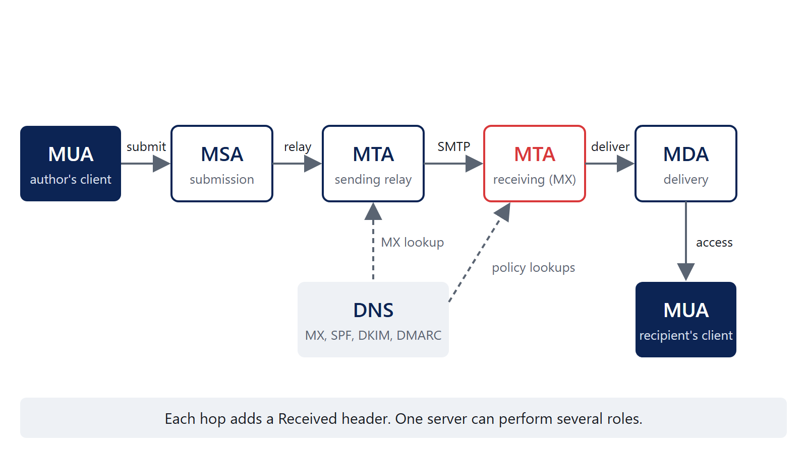

Email security
Understand how email moves, which identities are being authenticated, and how to determine whether a message passes DMARC.
How email works

The roles come from RFC 5598, Internet Mail Architecture:
| Role | What it does | Typical protocol and port |
|---|---|---|
| MUA, Mail User Agent | The author’s or recipient’s client: Outlook, a phone, a web client | Submission out, IMAP/POP/HTTPS in |
| MSA, Mail Submission Agent | Accepts new mail from users and applications, usually after they authenticate | SMTP submission: 587 (STARTTLS), 465 (implicit TLS), and sometimes 25 |
| MTA, Mail Transfer Agent | Relays between servers; the receiving one is the MX | SMTP, port 25 |
| MDA, Mail Delivery Agent | Puts the message in the mailbox | Local |
An MSA does not have to require authentication, or use port 587. RFC 6409 §4.3 says an MSA must reject unauthenticated mail by default “unless it has already independently established authentication or authorization (such as being within a protected subnetwork)”, and §3.1 says “A site MAY choose to use port 25 for message submission.” That is how printers, scanners and line-of-business applications send: an unauthenticated relay on port 25 that trusts their IP addresses, such as an Exchange receive connector or a Microsoft 365 connector. It is also why an internal relay that accepts anything from the network is worth finding during an incident. Port 465 with TLS from the first byte is RFC 8314.
A sending MTA finds where to deliver by looking up the recipient domain’s MX records in DNS, then connects to port 25 on the lowest-preference host that answers. In Microsoft 365 or Google Workspace, one service performs every role; the distinctions still show up in the headers.
The envelope versus the message
SMTP (RFC 5321) carries a message (RFC 5322) the way an envelope carries a letter. They have separate addresses, and they do not have to agree.
In the transcripts on this page, what the client sends and what the server answers are colored differently, and annotations are gray.
S: 220 mx1.example.net ESMTP
C: EHLO out-12.esp.example
S: 250-mx1.example.net
C: MAIL FROM:<bounce-7731@mailer.esp.example> <- envelope sender (RFC5321.MailFrom)
S: 250 2.1.0 Ok
C: RCPT TO:<pat@example.net> <- envelope recipient
S: 250 2.1.5 Ok
C: DATA
S: 354 End data with <CR><LF>.<CR><LF>
C: From: "Example County IT" <it-alerts@example.org> <- message author (RFC5322.From)
C: To: pat@example.net
C: Subject: Scheduled maintenance this weekend
C:
C: ...
C: .
S: 250 2.0.0 Ok: queuedConstructed transcript with reserved example names. Each client command gets a numbered reply from the server before the next one. The two From addresses are different on purpose: this is how every email service provider and mailing list works.
MAIL FROMandRCPT TOare SMTP commands, not message headers.RCPT TOis why Bcc works: the recipient is on the envelope, not in the message.Fromis the author. It is what the user sees, and it is what DMARC protects.Sendernames who actually sent the message on the author’s behalf, when that differs (RFC 5322 §3.6.2). Outlook shows it as “Sender on behalf of From”.Return-Pathis added by the final delivering server, recording theMAIL FROMaddress (RFC 5321 §4.4). Bounces go there.Reply-Tois where replies go. A mismatchedReply-Tois common in business email compromise.
Reading email headers
Download the constructed sample message to follow along. It uses reserved names (RFC 2606) and documentation addresses (RFC 5737).
Use Microsoft’s Message Header Analyzer. Paste headers into the web version, or install the Outlook add-in, and it lays out the hops with the delay at each one, the authentication results, and the anti-spam headers Microsoft 365 adds. The add-in needs mailbox permissions, so an administrator usually deploys it. Reading the raw headers yourself, as below, is still worth practicing: it is what you do when a tool’s interpretation looks wrong.
Return-Path: <bounce-7731@mailer.esp.example>
Received: from mx1.example.net (mx1.example.net [198.51.100.25])
by mbox1.example.net (Postfix) with ESMTPS id 4F2A11C0042
for <pat@example.net>; Fri, 16 Oct 2026 14:02:11 -0500 (CDT)
Authentication-Results: mx1.example.net;
spf=pass smtp.mailfrom=mailer.esp.example;
dkim=pass header.d=example.org header.s=esp2026 header.b=Qx3fK9aL;
dmarc=pass header.from=example.org
Received: from out-12.esp.example (out-12.esp.example [203.0.113.40])
by mx1.example.net (Postfix) with ESMTPS id 9C77E2A0011
for <pat@example.net>; Fri, 16 Oct 2026 14:02:10 -0500 (CDT)
Authentication-Results: out-12.esp.example; dkim=pass header.d=example.org; dmarc=pass
DKIM-Signature: v=1; a=rsa-sha256; c=relaxed/relaxed; d=example.org;
s=esp2026; t=1792177329; h=from:to:subject:date:message-id;
bh=47DEQpj8HBSa+/TImW+5JCeuQeRkm5NMpJWZG3hSuFU=;
b=Qx3fK9aL...
Received: from app01.example.org (app01.example.org [192.0.2.17])
by out-12.esp.example (Postfix) with ESMTPSA id 0B1D4400A3
for <pat@example.net>; Fri, 16 Oct 2026 19:02:09 +0000 (UTC)
From: "Example County IT" <it-alerts@example.org>
Reply-To: helpdesk@example.org
To: pat@example.net
Subject: Scheduled maintenance this weekend
Date: Fri, 16 Oct 2026 14:02:08 -0500
Message-ID: <20261016190208.12345@app01.example.org>Received headers and the path a message took
Each server prepends a Received header, so the newest is at the top. Read from the bottom up:
app01.example.org [192.0.2.17]submitted to the providerout-12.esp.examplewith ESMTPSA: SMTP with TLS (S) and authentication (A).out-12.esp.example [203.0.113.40]relayed to the recipient’s MX,mx1.example.net. This is the connection SPF evaluated: 203.0.113.40 is the IP the receiver saw.mx1.example.nethanded it to the mailbox server.
Compare timestamps across hops (converting time zones) to find delays. The from name in a Received header is what the connecting host claimed in EHLO; the name and IP in parentheses are what the receiving server observed.
Authentication-Results and which system added them
RFC 8601 defines Authentication-Results. The first token is the authserv-id: the system that did the checking. This message has two. Only mx1.example.net is the recipient’s own boundary; the one from out-12.esp.example was added by the sender’s provider and proves nothing to the recipient.
| Result | Identity checked | Value here |
|---|---|---|
spf=pass |
smtp.mailfrom, the envelope domain |
mailer.esp.example |
dkim=pass |
header.d, the signing domain, with header.s the selector |
example.org, selector esp2026 |
dmarc=pass |
header.from, the author domain |
example.org |
SPF passed for the provider’s domain, which does not align with example.org. DMARC still passes, because DKIM passed and its d= matches the From domain.
Which headers can be trusted?
Only those added by systems you control: everything at and above your own boundary MX’s first Received header. Anything below it was written by the sender or by servers you do not operate, and can be forged, including Received and Authentication-Results headers. A well-behaved receiver removes Authentication-Results headers that claim its own authserv-id before adding its own.
Forwarding and mailing lists break SPF (a new IP) and often DKIM (a modified subject or footer). ARC (RFC 8617, Experimental) lets intermediaries record the results they saw; receivers decide whether to trust a given intermediary.
Pulling headers apart in PowerShell
Header lines are folded: a line beginning with a space or tab continues the previous header. Unfold first, then parse:
function Get-MailHeader {
<#
.SYNOPSIS
Splits the headers of a saved message (.eml) into one object per header, in the order they appear.
.EXAMPLE
Get-MailHeader -Path .\constructed-headers.eml | Where-Object Name -eq 'Received'
#>
[CmdletBinding()]
param(
[Parameter(Mandatory)]
[string]$Path
)
$Raw = Get-Content -LiteralPath $Path -Raw
# The headers end at the first blank line
$HeaderBlock = ($Raw -split "\r?\n\r?\n", 2)[0]
# A line starting with a space or tab continues the header above it ("folding"); join them back up
$Unfolded = $HeaderBlock -replace '\r?\n[ \t]+', ' '
# Order 0 is the top header, which the last server added
$Order = 0
$Unfolded -split '\r?\n' |
ForEach-Object {
$Name, $Value = $_ -split ':\s*', 2
[pscustomobject]@{ Order = $Order++; Name = $Name; Value = $Value }
}
}# Path, oldest hop first
Get-MailHeader -Path .\constructed-headers.eml |
Where-Object Name -eq 'Received' |
Sort-Object Order -Descending |
Format-Table Order, Value -Wrap
Get-MailHeader -Path .\constructed-headers.eml |
Where-Object Name -in 'Return-Path', 'From', 'Reply-To', 'Authentication-Results'SPF
What SPF checks: is the connecting IP allowed to send mail for the envelope domain? RFC 7208 evaluates the MAIL FROM domain, or the HELO/EHLO name when MAIL FROM is empty (bounces). It never looks at the From header.
example.org. TXT "v=spf1 ip4:192.0.2.0/24 include:_spf.esp.example -all"| Mechanism | Matches when the IP… |
|---|---|
ip4:, ip6: |
is in the address or range |
a, mx |
is an A/AAAA address of the domain, or of its MX hosts |
include: |
passes the SPF policy of another domain |
exists: |
makes a constructed name resolve (advanced) |
all |
always; used last |
ptr |
reverse DNS matches; “SHOULD NOT” be used |
Each mechanism takes a qualifier: + pass (default), - fail, ~ softfail, ? neutral. Results are pass, fail, softfail, neutral, none, temperror and permerror.
Limits that cause real outages: at most 10 mechanisms and modifiers that need DNS lookups (include, a, mx, ptr, exists, redirect) per evaluation, counting nested includes, and at most 2 lookups that return nothing (RFC 7208 §4.6.4). Exceeding them is a permerror, which DMARC treats as not passing. Only one SPF record per name is allowed; two is also a permerror.
SPF pass does not necessarily mean DMARC pass. It passes for the envelope domain. If that is a provider’s bounce domain, SPF is not aligned with the From domain.
DKIM
What DKIM signs and verifies: a signature over chosen header fields and the body, made with the signing domain’s private key. The receiver fetches the public key from DNS and verifies. RFC 6376.
DKIM-Signature: v=1; a=rsa-sha256; c=relaxed/relaxed; d=example.org;
s=esp2026; t=1792177329; h=from:to:subject:date:message-id;
bh=47DEQpj8HBSa+/TImW+5JCeuQeRkm5NMpJWZG3hSuFU=; b=Qx3fK9aL...
esp2026._domainkey.example.org. TXT "v=DKIM1; k=rsa; p=MIIBIjANBgkqh..."| Tag | Meaning |
|---|---|
d= |
Signing domain: the identity DKIM authenticates, and what DMARC compares |
s= |
Selector: the key is at <s>._domainkey.<d> |
a= |
Algorithm, rsa-sha256 or ed25519-sha256 |
h= |
Header fields covered; from is required |
bh= |
Hash of the canonicalized body |
b= |
The signature |
c= |
Canonicalization for header/body, simple or relaxed: how tolerant it is of whitespace changes |
t=, x= |
Signature time and optional expiry |
l= |
Body length signed; anything after it is unsigned, so avoid it |
The d= domain does not have to match the From domain; DKIM only says “this domain took responsibility for this message.” DMARC is what requires a match. An empty p= in the key record means the key was revoked.
DMARC
DMARC (RFC 9989, May 2026) ties SPF and DKIM to the domain the user sees.
- Start with the domain in the message
Fromheader. Look up_dmarc.<that domain>, walking up toward the organizational domain if there is no record. - A message passes DMARC if SPF or DKIM passes and is aligned with that domain. One is enough.
- Alignment. Strict (
s): the domains are identical. Relaxed (r, the default): they share an organizational domain, somail.example.orgaligns withexample.org. - Policy and reporting. If DMARC fails, the domain owner’s policy asks receivers to do nothing (
none), treat it as suspicious (quarantine) orrejectit, and where to send reports.
_dmarc.example.org. TXT "v=DMARC1; p=quarantine; rua=mailto:dmarc-reports@example.org"Alignment checker
Pick a worked example, or enter the identities from your own message. Work out the result, then select Show answer. The organizational domain is filled in as the last two labels of the From domain; that is an approximation. Real receivers find it with the DNS tree walk in RFC 9989 §4.10, so correct it for names like example.k12.wi.us.
Work through email headers
These three exercises are from learndmarc.com, which builds and sends a test message and shows each step. Transcripts are reproduced as text. For each one, identify the sender identities, the SPF and DKIM results, and whether the message passes DMARC, and why.
Example 1
. 220 smtp.learndmarc.com ESMTP Postfix
> HELO red.secondary.com
. 250 smtp.learndmarc.com Hello red.secondary.com <153.112.107.49>
> MAIL FROM: <gina@red.secondary.com>
. 250 Ok
> RCPT TO: <someone@yahoo.com>
> DATA
> From: "Gina" <gina@blue.secondary.com>
> DKIM-Signature: v=1; a=rsa-sha256; d=primary.com; s=selector; (DKIM Auth Result: PASS)
> Subject: Who reads the subject anyway?
Policies:
DMARC policy _dmarc.blue.secondary.com: "v=DMARC1; p=quarantine; t=y;"
SPF policy red.secondary.com: "v=spf1 ip4:182.107.92.190 -all"
SPF policy blue.secondary.com: "v=spf1 ip4:24.121.50.128 ~all"Answer
DMARC fails, the message will NOT be treated as suspicious.
- Domain part
red.secondary.comfrom the RFC5321.MailFrom address (MAIL FROM:) is used to retrieve the SPF policy. - Domain part
blue.secondary.comfrom the RFC5322.From address (From:) is used to check DMARC alignment. - The message is signed with a DKIM signature and passed validation.
- SPF failed because source IP address 153.112.107.49 is NOT allowed to send on behalf of
red.secondary.com. - Having
t=yin a DMARC policy signals that the Domain Owner is in test mode and requests that mail receivers not apply the stated handling policies (p, sp, or np) to messages that fail validation checks. - The DMARC alignment policy is ‘relaxed’. This is because the ‘aspf’ and ‘adkim’ elements were not specified or had an ‘r’ value. This means that only the organizational domains have to be in alignment.
- DKIM passed validation but there is NO alignment (
primary.com!=secondary.com). - DMARC failed because neither SPF or DKIM passed validation and have alignment.
red.secondary.com would have aligned with blue.secondary.com under relaxed alignment: both have the organizational domain secondary.com.
Example 2
. 220 smtp.learndmarc.com ESMTP Postfix
> HELO red.primary.com
. 250 smtp.learndmarc.com Hello red.primary.com <97.196.174.88>
> MAIL FROM: <terry@red.primary.com>
. 250 Ok
> RCPT TO: <someone@hotmail.com>
> DATA
> From: "Terry" <terry@blue.primary.com>
> DKIM-Signature: v=1; a=rsa-sha256; d=secondary.com; s=selector; (DKIM Auth Result: FAIL)
> Subject: I'll let myself out
Policies:
DMARC policy _dmarc.blue.primary.com: "v=DMARC1; p=quarantine; adkim=s; aspf=s;"
SPF policy red.primary.com: "v=spf1 ip4:95.129.128.101 ~all"
SPF policy blue.primary.com: "v=spf1 ip4:44.62.173.139 ~all"Answer
DMARC fails, the message will be quarantined.
- Domain part
red.primary.comfrom the RFC5321.MailFrom address (MAIL FROM:) is used to retrieve the SPF policy. - Domain part
blue.primary.comfrom the RFC5322.From address (From:) is used to check DMARC alignment. - The message is signed with a DKIM signature but failed validation (auth result ‘fail’), the message has been altered.
- SPF failed because source IP address 97.196.174.88 is NOT allowed to send on behalf of
red.primary.com. - The DMARC alignment policy is ‘strict’. The ‘aspf’ and ‘adkim’ elements have an ‘s’ value. This means that both domain and subdomain need to be an exact match.
- DMARC failed because neither SPF or DKIM passed validation and have alignment.
- DMARC failed and the policy is set to ‘quarantine’ so the requested action is to quarantine the message.
~all, so learndmarc’s “failed” is strictly an SPF softfail. For DMARC the distinction does not matter: only pass counts.
Example 3
. 220 smtp.learndmarc.com ESMTP Postfix
> HELO blue.secondary.com
. 250 smtp.learndmarc.com Hello blue.secondary.com <156.157.23.197>
> MAIL FROM: <ray@blue.secondary.com>
. 250 Ok
> RCPT TO: <someone@gmail.com>
> DATA
> From: "Ray" <ray@red.primary.com>
> DKIM-Signature: v=1; a=rsa-sha256; d=blue.primary.com; s=selector; (DKIM Auth Result: PASS)
> Subject: DMARC test
Policies:
DMARC policy _dmarc.red.primary.com: "v=DMARC1; p=none; adkim=s; aspf=s;"
SPF policy blue.secondary.com: "v=spf1 ip4:62.165.120.61 ~all"
SPF policy red.primary.com: "v=spf1 ip4:156.157.23.197 -all"Answer
DMARC fails, the message will NOT be treated as suspicious.
- Domain part
blue.secondary.comfrom the RFC5321.MailFrom address (MAIL FROM:) is used to retrieve the SPF policy. - Domain part
red.primary.comfrom the RFC5322.From address (From:) is used to check DMARC alignment. - The message is signed with a DKIM signature and passed validation.
- SPF failed because source IP address 156.157.23.197 is NOT allowed to send on behalf of
blue.secondary.com. - The DMARC alignment policy is ‘strict’. The ‘aspf’ and ‘adkim’ elements have an ‘s’ value. This means that both domain and subdomain need to be an exact match.
- DKIM passed validation but there is NO alignment (
blue.primary.com!=red.primary.com). - DMARC failed because neither SPF or DKIM passed validation and have alignment.
- DMARC failed but the policy is set to ‘none’ so no action will be taken.
red.primary.com’s SPF record, which is a trap: SPF is evaluated for the MAIL FROM domain, not the From domain. And under relaxed alignment, the DKIM signature from blue.primary.com would have aligned with red.primary.com.
The answers above are learndmarc’s explanations; the notes are additions.
DNS records: lookups and troubleshooting
Resolve-DnsName -Name example.org -Type MX
Resolve-DnsName -Name example.org -Type TXT | Where-Object { $_.Strings -match '^v=spf1' }
Resolve-DnsName -Name esp2026._domainkey.example.org -Type TXT
Resolve-DnsName -Name _dmarc.example.org -Type TXT
Resolve-DnsName -Name _mta-sts.example.org -Type TXT
Resolve-DnsName -Name _smtp._tls.example.org -Type TXTdig +short MX example.org
dig +short TXT _dmarc.example.org
nslookup -type=txt _dmarc.example.orgCommon problems:
| Symptom | Likely cause |
|---|---|
SPF permerror |
Two SPF records, a syntax error, or more than 10 DNS-lookup mechanisms after nested includes |
| SPF passes, DMARC fails | The envelope domain is the provider’s, so SPF is not aligned; set up DKIM with your domain as d=, or a custom return-path domain |
DKIM fail for one sender only |
Wrong selector published, key rotated without DNS update, or a gateway that modifies messages after signing |
| DKIM passes, DMARC fails | The provider signs with its own domain; configure signing with your domain |
Legitimate mail quarantined after moving to p=quarantine |
A sender that was never inventoried; the aggregate reports would have shown it |
| Forwarded mail fails | Forwarding breaks SPF; DKIM survives only if the forwarder does not modify the message |
Look up the DKIM selector from a real message’s DKIM-Signature (s=), not by guessing.
DMARC reporting and the 2026 RFCs
Aggregate reports (RFC 9990)
Receivers send daily-ish XML summaries to the rua address: for each sending IP, how many messages, the SPF and DKIM results, whether each aligned, and the disposition applied. RFC 9990 defines the format. Reports are usually gzip-compressed attachments. This is how you find every service sending as your domain before you move from p=none to enforcement.
Sending reports to another domain (a vendor or a CRT-run mailbox) requires the destination to agree. For _dmarc.example.org with rua=mailto:reports@dmarc.vendor.example, receivers check for:
example.org._report._dmarc.dmarc.vendor.example. TXT "v=DMARC1"Without it they ignore that rua URI. This stops a domain from flooding a victim with reports.
Failure reports (RFC 9991)
Per-message reports to the ruf address, controlled by fo. RFC 9991 warns they can contain full headers and content, including personal information; many large receivers do not send them. Aggregate reports are the recommended default.
What changed from RFC 7489
RFC 9989 obsoletes RFC 7489 and RFC 9091 and moves DMARC to the Standards Track (Appendix C):
| Change | Detail |
|---|---|
pct removed |
Partial enforcement by percentage is gone; t=y replaces part of its function |
t added |
Test mode: request that receivers not apply the policy |
np added |
Policy for non-existent subdomains (from RFC 9091) |
psd added |
Flags public suffix domains |
rf, ri removed |
Report format and interval tags |
| Organizational domain | Found by a DNS tree walk of _dmarc records (at most 8 queries) instead of the Public Suffix List |
| Reporting split out | Aggregate reporting is RFC 9990, failure reporting RFC 9991 |
| Terminology | “Domain Owner Assessment Policy,” “Enforcement,” “Monitoring Mode”; “Report Receiver” became “Report Consumer” |
Existing v=DMARC1 records keep working; unknown tags are ignored, so a leftover pct= does no harm but no longer does anything for receivers that follow RFC 9989.
Other email security mechanisms
MTA-STS and TLS reporting
SMTP between servers uses opportunistic STARTTLS: an attacker on the path can strip it, and senders do not validate certificates by default. MTA-STS (RFC 8461) lets a domain publish that its MX hosts support TLS with valid certificates, and that senders should refuse to deliver otherwise.
_mta-sts.example.org. TXT "v=STSv1; id=20261016T000000;"The policy is served over HTTPS at https://mta-sts.example.org/.well-known/mta-sts.txt:
version: STSv1
mode: enforce
mx: mail.example.org
max_age: 604800Start with mode: testing, and change id whenever the policy changes so senders refetch it.
TLS-RPT (RFC 8460) asks senders to report TLS negotiation failures, which is how you find out MTA-STS (or an expired MX certificate) is blocking mail:
_smtp._tls.example.org. TXT "v=TLSRPTv1; rua=mailto:tlsrpt@example.org"Sender ID (historical)
Microsoft’s Sender ID (RFC 4406) checked a “purported responsible address” taken from the message headers rather than the envelope, and reused v=spf2.0 records. The IETF experiment was concluded in RFC 6686 (2012), which found SPF in wide use and Sender ID not. If you find spf2.0/pra records, they are leftovers.
References
| RFC 5598 | Internet Mail Architecture |
| RFC 5321 | Simple Mail Transfer Protocol |
| RFC 6409 | Message Submission for Mail |
| RFC 8314 | Implicit TLS for email submission and access |
| RFC 5322 | Internet Message Format |
| RFC 8601 | Authentication-Results header field |
| RFC 7208 | SPF |
| RFC 6376 | DKIM |
| RFC 9989 | DMARC |
| RFC 9990 | DMARC aggregate reporting |
| RFC 9991 | DMARC failure reporting |
| RFC 8617 | ARC |
| RFC 8461 | MTA-STS |
| RFC 8460 | SMTP TLS reporting |
| RFC 6686 | Resolution of the SPF and Sender ID experiments |
| learndmarc.com | Source of the three worked examples |
| Message Header Analyzer | Microsoft; source and Outlook add-in |